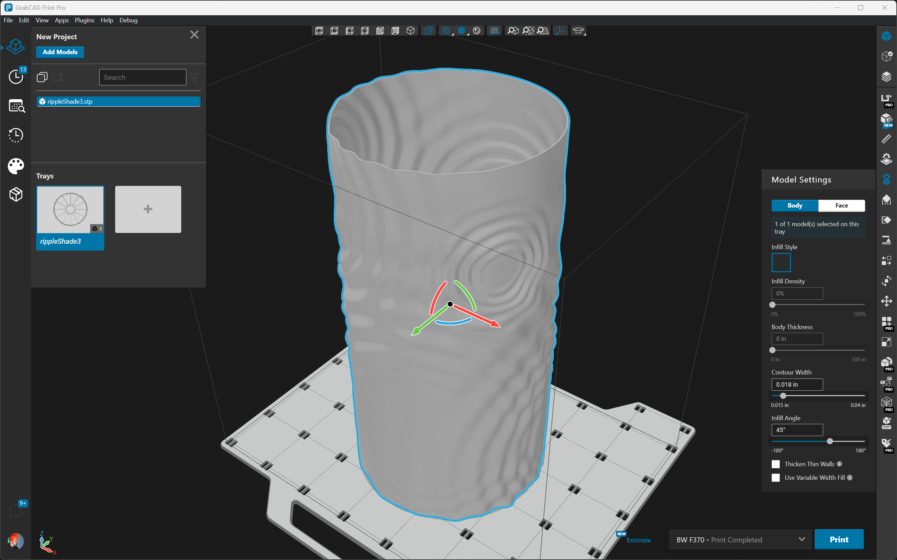

{kind=link}
GrabCAD Print
.png)
GrabCAD Print is the primary user interface for all Stratasys 3D printers including FDM & PolyJet. It handles CAD model slicing & print preparation locally, and enables remote job scheduling, queue management, and reporting tools for networked printers. It's built on Electron + React + TypeScript, with a plugin-based, dependency-injection architecture, and is auto-updated on a monthly release cycle.
.png)
Above: GrabCAD Print in Dark Mode. Right: Component Library & Style Guide.
Contributions
- Improved app-wide UX consistency, maintainability, and increased developer velocity by introducing UI Component Library & Style Guide.
- Increased user value with addition & refinement of numerous core features including: Project Panel, Main Toolbar, Printer List, Preferences Modal, Drag-and-Drop files, Recent files, Auto-Update.
- Improved unit, integration, and diagnostic test quality, coverage, and tooling. Ensured installer integrity with automated end-to-end tests using virtual machines in the cloud.
- Freed up developer resources by automating previously manual, error-prone installer build, sign, deploy, and release process to the point where the QA organization could take full ownership.
{kind=link}
GrabCAD Print Scheduler
{kind=link}
A core feature of GrabCAD Print is the ability to remotely schedule and manage print jobs on networked printers. I led the design and development of the new Print Scheduler, which was a ground-up rewrite to replace the legacy 3D Printer queue management system with a hybrid on-prem/cloud system integrating networked Printers connected locally, via legacy cloud infrastructure, or new AWS Greengrass IoT Gateways. The system needed to integrate with existing workflows, while allowing customers to seamlessly upgrade and unlock new features such as moving jobs between printers, automatic load balancing, robust audit trails, search, and reprint. It was designed from the ground up to be functional in fully offline environments, supporting the strict security requirements of government and defense customers.
Drag and Drop
{kind=link}
A particularly fun challenge was executing a custom drag-and-drop solution for the unique needs of this complex UI. When moving jobs between printers we needed to account for job-specific constraints, as well as configurable "operating hours" for the customer's organization. We also preview cascading downstream changes to predicted load-balancing between printers.
Print Job History & Search
The Print Scheduler needed to accommodate our largest customers' 3D printer farms, displaying a searchable history of completed jobs spanning up to a year across 100s of printers. We utilized native scrolling and careful optimization to support mobile devices and achieved 60fps pan and zoom even with the largest datasets.
{kind=link}
{kind=link}
GrabCAD Streamline Pro
{kind=link}
{kind=link}
GrabCAD Streamline Pro is a suite of cloud-based tools for managing large fleets of 3D printers. I led the design and development of two pillars of this suite: GrabCAD Control and GrabCAD Shop.
GrabCAD Control (left) is the authentication and authorization hub of the GrabCAD Additive Manufacturing Platform. Features: Enterprise SSO, User & Group Management, Access Control of Printers, Granular Permissions, and Licensing.
GrabCAD Shop (below) is a work order submission and tracking portal for customers to upload CAD models and supporting files to their internal 3D printing services team. Features: Rich Configuration Options, Job Submission & Tracking, CAD Model Preview, Automatic Cost Estimation, Reporting, and Status Notifications.
{kind=link}
{kind=link}
{kind=link}
{kind=link}
{kind=link}
{kind=link}
{kind=link}
{kind=link}
Laser Cat
A series of parametric sculptures made from laser-cut mirrored acrylic.
Process
Low poly meshes were designed Blender, then processed in Rhino using a custom Python script. The script transforms the mesh into non-overlapping faces while accounting for material thickness, then generates interlocking tabbed "hubs" with the precise angle of each shared edge. Slots and hubs are etched with matching numbers to make assembly possible.
Bin Packing
Arranging the parts for laser cutting to minimize material wastage turned out to be a challenging combinatorial optimization problem. After trying several free software packages with mixed results, I hit upon the idea to try physics simulation. In order to import the laser cutting paths into the simulation, I modified the Python script to output the toolpaths alongside simplified geometry compatible with the simulation engine. SVG turns out to be a great format for this.
This approach turns out to work quite well. You can see a live demo here: caseprince.github.io/physics-bin-packing I added seeded randomness to the initial placement and orientation of parts and set up the app to iterate over seeds and record the densest packings.
Laser Dog!
This pupper was my first try at the process. The tab and slot geometry was designed to be press-fit, which didn't work as well as I'd hoped due to tolerance variations in the laser cutter. I ended up using a little superglue to hold it together. The cat improves on this with compliant snap-fit joints that require no glue.
{kind=link}
{kind=link}
{kind=link}
{kind=link}
{kind=link}
{kind=link}
{kind=link}
{kind=link}
{kind=link}
TraceView AppMap
A realtime network topology & health graph for distributed applications. I was the lead developer on the front end visualization. I worked closely with our Product Managers, Designer and multiple brilliant teams of Developers, developing initial prototypes, rapidly iterating, polishing, optimizing, finalizing features, APIs & interfaces, integrating and ultimately deploying. This was an especially fun and challenging visualization to nail down. Some key challenges:
1. Performance & Scalability
The AppMap needed to be able to visualize anywhere 10 or 1000 networked nodes and still be performant. We chose D3 & SVG for the main visualization. This allowed us to abstract out styling via CSS, and leverage native DOM interactions. These benefits, along with D3's data-binding and SVG's DOM testability made it the clear choice over <canvas> & WebGL.
2. Information Density
With hundreds of nodes and network paths we needed to minimize on-screen text for smooth scrolling and digestibility. We used intuitive colors and CSS animation to indicate node health, and color and line thickness to represent network health and throughput. Contextual z-sorting of SVG elements enables users to quickly see (and easily click on) problematic nodes or edges.
{kind=link}
{kind=link}
3. Graph Theory
The earliest appmap prototypes used D3's force-directed layout, but with 500+ nodes our frame rate went down and our fans turned on. We dubbed the resulting tangles "angry spiders" and came to understand that force-direction is great for relatively simple maps, but isn't very scalable, especially with persistent text labels.
4. Intelligent Layout
Our intreped designer Quintin Marcus mocked up a 'column mode', intellegently grouping nodes by type, such that requests generally flow left-to-right, e.g. user nodes on the far left originate requests which flow to the right through servers, to caches, DBs, CDNs, etc. This layout mode was super fun and deceptively challenging to implement with smooth scrolling and dynamic responsiveness.
Notable features at launch include:
- Dynamic columns and rows by node type
- Vertical and horizontal responsiveness with dynamic node name truncation
- Column order dynamically prefers left-to-right network request flow
- Intuitive contextual z-sorting of nodes and edges
We erred on the side of over-delivering by flushing out both modes and persisting user preference for one or the other.
{kind=link}
TraceView - Trace Details Visualizer
TraceView is a full-stack Application Performance Management (APM) SaaS Application. As a member of TraceView's Web App team, I collaborated with Product Managers, Designers, and Developer teams to design, develop, and deliver new features and visualizations. We also fixed copious bugs, eradicated technical debt, and introduced modern Javascript frameworks, libraries, and tooling, such as React, D3, and ES6/ES7.
Trace Details Visualizer
Ye olde Trace Details Visualizer was plagued by long-standing bugs and lackluster UI/UX. Customers were complaining about poor performance and even browser crashes when rendering complex traces. Sadly, we didn't have the time or budget to address these issues, and the legacy code had become unmaintainable.
{kind=link}
Skunkworks
Unable to walk away from this fascinating challenge, I went rogue, burning midnight oil to create a green-field replacement. My prototype could smoothly animate, pan, scroll, and zoom through 20K+ extents at 60fps! This turned out to be the easy part. The hard parts came next: achieving full feature-parity, flushing out new features, adding unit & functional test coverage, and integrating with legacy endpoints & templates.
{kind=link}
{kind=link}
Hackathon
A tipping point came when teammate Dan Riti organized a full-team hackathon. We all sat around the picnic table and I doled out subtasks to volunteers. Even our CTO Dan Kuebrich came down and hacked with us! Much fun was had and so much progress was made I was finally able to get buy-in from Product.
The Home Stretch
The last 10% (always the hardest) was brought home with help from our Senior Designer Quintin Marcus, Product Manager Jennifer Burner, our industrious intern Will de Rivera, and QA extrordinare Rob Salmond.
{kind=link}
{kind=link}
Ship it!
We worked with marketing, documentation, sales & support teams to prepare for launch, hosting demos for Product and Sales Engineers, writing a blog post and recording a video walkthrough. Since this was a critical visualizer, we preserved the legacy page in production behind a hidden URL as a fallback and for QA comparison.
The Vis That Keeps on Giving
Post-launch, we continued reaching out to users for feedback, and shipping UI/UX improvements. In addition to happier customers, we gained new insight into previously invisible edge-cases of malformed data in our trace-processing pipeline and instrumentation. TraceView is very much an "eat your own dogfood" product, and this upgraded vis created a ripple effect of improvements throughout our codebase.
{kind=link}
Git Gong
A team-building, code-collaborating, conversation piece. I was jealous of AppNeta's sales reps ringing the big gong when they made a big sale, and wanted to learn a little Ruby, so I built this during our self-directed "20% Tuesdays."
Ingredients:
- GitHub Webhooks allow you to build or set up integrations which subscribe to certain events on GitHub.com.
- Spark.io: A $19 postage stamp-sized hackable Wi-Fi module for interacting with physical things.
- Heroku is a cloud application platform – a newfangled way of building and deploying apps.
- One (1) Rube Goldberg machine made with scrap wood, servo, vintage clock chime, paperclip, and misc. hardware.
Instructions:
- Get a Spark Core or Photon. Register, claim your device, & flash HelloWorld via wifi.
- Connect your servo and calibrate – Play with angles to determine min/max – write down your angle setting when you encounter “servo-growling” so you can avoid that high-voltage state. Choose a generous angle range > 90° that has plenty of buffer between min and max. (eg: 30° – 160°) Here’s our spark code: https://github.com/caseprince/git-gong/blob/master/spark-gong.ino
- Mount servo on Rube Goldberg contraption w/ bell & clapper, keeping your angle range in mind.
- Sign up for a free Heroku account and deploy something like this: https://github.com/caseprince/git-gong/blob/master/github-listener.rb You’ll need to swap in your Spark API key in env.rb, and update __YourCoreName__ to talk to your core.
- Test by hitting your Heroku URL. (eg: “sweet-gong-12345.herokuapp.com”)
- Create a “Push event only” webhook on a GitHub repo pointing to your new Heroku app. (You’ll need admin privileges on the repo.) Test by pushing to your repo.
- “Gong”
- ???
- Profit
This is the most important thing ever built with GitHub webhooks. http://t.co/qi0MsOMH45 👍
— Kyle Daigle (@kdaigle) March 3, 2015
Maintenance & Enhancement:
This shoestring contraption was surprisingly reliable for ~18 months - with only a little downtime when I tried to move the servo to a negative angle and the magic smoke got out, necessitating an upgrade: The new servos came in a 4-pack, so I gave Jenkins a coat-hanger driven musical-chime so he could let us know when our AMI Auto-Scaling Groups were ready. (Actually useful since our build process took ~30min.) I was working on Jira integration when the Git Gong was stymied by our IT dept. disabling 2.4GHz in favor of pure 5GHz wifi.
Original Blog post: www.appneta.com/blog/github-webhooks-spark-core-heroku-gitgong
{kind=link}
Dance.js Audio Visualizer
{kind=link}
{kind=link}
{kind=link}
{kind=link}
{kind=link}
{kind=link}
- Demo
- caseprince.com/appneta/dancejs
- Made with
- three.js & TweenMax.js
- For
- Dance.js Vancouver Edition, 2015
- Hosted by
- Stephen Belanger
{kind=link}
WebGL Globe
- Client
- Akamai Technologies
- About
-
A prototype-upgrade for
Akamai's Spinning Globe. Goals include:
- More visual impact, richer interaction.
- Easily readable, multi-dimensional data.
- Data display per City and/or Region.
- Auto-play mode cycling through top Cities
- Deployment in Network Operations Command Centers (NOCCs).
- Challenges
-
- Effecient client-side spherical extrusion of custom TopoJSON shapes with THREE.js
- Too-Large-to-extrude Regions (Russa: Y U cross international date line on mercator projection?)
- Transparency, Shaders, FPS, Rollovers, 3d-to-2d 'unprojection' for H.U.D.
- Animating the short way from L.A. to Tokyo (How do I great circle?)
- Face & Vertex Normals (how do they work?)
- Tech
- WebGL, D3, THREE.js, TopoJSON, Constructive Solid Geometry
- Conspirator
- Leo Dornelas
Akamai Customer Dashboard
{kind=link}
{kind=link}
{kind=link}
- Static Archive
- http://caseprince.com/akamai/cdb/
- Client
- Akamai
- About
- Akamai’s Customer Dashboard (CDB) is a multi-device tool that enables Akamai customers to view pertinent, near-real time site data via a single, simple user interface. Using data pulled at intervals ranging from 5 minutes to 7 days, the CDB provides current and historical views of site performance, streaming performance, and security threats. It demonstrates the value of Akamai to both technical and non-technical users, highlighting the performance benefits and enhanced security Akamai delivers.
- Roles
- Project Lead and Architect. Coordinated between internal designers, developers and outside contractors. Worked closely with backend developers on API & database design to create a regional, scalable, low-latency app with smart caching & optimization via a ‘variable interval’ API that enables low-latency display of high-granularity data for short time-ranges (e.g., 24hrs x 5min interval), and progressively aggregates low-granularity data feeds for larger time-ranges (e.g., 1year x 7day interval).
- Tech
- Yeoman, D3.js, TopoJSON, HighStock, Compass/SASS, RequireJS, History.js, Moment.js, Tween.js, John Resig's Simple JavaScript Inheritance
- Collaborator
- Leo Dornelas
{kind=link}
Muppets Most Wanted - Catch Constantine
{kind=link}
{kind=link}
{kind=link}
- Game
- games.disney.com/muppets-most-wanted-catch-constantine
- Client
- Disney Interactive
- Agency
- RED
- About
- A mobile-first HTML5 game for the newest Muppets movie; Muppets Most Wanted
- Roles
- Concept, Development, visual & sound design, game mechanics
- Tech
- <canvas>, jQuery, CSS3, SASS, Compass, require.js, John Resig's Simple JavaScript Inheritance, Rosy
- Collaborators
- Alex Tyack, Pep Lupo
{kind=link}
Spheres.js
- Site
- caseprince.github.io/spheres/
- About
- This is most of my sphere collection. The interface is a learning exercise & experiment in JavaScript modularity, inheritance, 3d & particle rendering and physics. Needless to say it's a work in progress.
- Source
- github.com/caseprince/spheres
- Tech
- <canvas>, jQuery, require.js, three.js, Box2DWeb, tween.js, Simple JavaScript Inheritance.
{kind=link}

Coke Zero Ad
A Rich Media ad for Coke Zero's Rooftop Racer 'advergame'. Grab the bottle and shake it up! Designed in collaboration with Crispin Porter + Bogusky
Foam physics sumulated with Box2D
The Thrill of the Catch
{kind=link}
{kind=link}
{kind=link}
- Client
- Discovery Education
- Agency
- RED
- Contributions
- AS3 coding of dynamic fish behavior and animation in fish-feeding & fishing simulators. Integration between fronend & backend APIs and between fish configurator, fish-feeding & fishing simulators, user achievements, and shared lake environment. Balancing of social game mechanics, e.g., Bait preference radii per fish species, or user trash collection rates vs. pollution levels.
- Awards
- FWA Site of the day, Creativity International Award
- Tech
- Flash, Flash Builder, TweenMax, TimelineMax, Python
- Collaborators
- Matt Mangus, Jared Kroff, Adam Devincent
{kind=link}
RED Canvas Logo
Source github.com/ff0000/red-canvas-logo/
About This was a "Dev Day" project and ended up being used as the main logo in our office, projected on a cool translucent wall at reception. My brilliant colegues made too many canvas animations to list them all, but some favorites are; Physics, PathTree, and Hairs.
Contributions Some 3d & mathy animations, live weather reports & street-views for the office locations, and a traffic map for L.A. because their rush-hour is epic. Never quite got around to adding the surf-report/forecast.
Tech <canvas>, jQuery, CSS3, SASS, Compass, SVG, Google Maps API, Weather Underground API
Conspirators Tim Wood, James Deagle, Jay Weeks, Christian Shum-Harden, Jacques Altounian
Ford Mustang 2013 Customizer
{kind=link}
{kind=link}
{kind=link}
{kind=link}
- Clients
- Ford & Team Detroit
- Agency
- RED
- Roles
- Updating the customizer from the 2012 model. Removal of ‘12 contest across site, removal of Boss 302 engine type from configurator. Addition of user selectable garage backgrounds & other site updates.
- Tech
- Flash, Flash Builder, ANT
- Collaborator
- Taka Kojima
Ford 150 Comparison Tool - Arabic Localization
{kind=link}
{kind=link}
{kind=link}
{kind=link}
- Clients
- Ford & Team Detroit
- Agency
- RED
- Roles
- Complete dual localization into Arabic & Middle East English. Conversion of all units into Metric, e.g.; towing & hauling capacity, fuel consumption & torque. Arabic translations were deployed to XML, Flash, and Photoshop, each of which presents different technical challenges due to Arabic’s right-to-left paragraph flow, common ligatures, typographical style, & conventions. Horizontal mirroring of many interface elements & content-sections to preserve right-to-left content flow & legibility. Added geo-specific content and multi-currency selector & calculator for 10 different regional currencies and corresponding petrol prices.
- Tech
- Flash, Flash Builder, Photoshop, Opentype
- Collaborators
- Matt Mangus, Jared Kroff, Adam Devincent
Trueblood Twitter App @ bloodcopy.com
{kind=link}
{kind=link}
{kind=link}
{kind=link}
- Client
- HBO
- Agency
- RED
- About
- A twitter hub for "Trubies". Included @anywhere API integration (now depricated) and a live feed of trueblood related tweets, official twitter accounts & superfan list filtering, schedulable real-time tweet feed from guest Celebritiy Hosts, and real-time #trueblood trending topic visualizer using a custom physics-based chronological "tag cloud" with interactive tweet volume timeline. Also included mobile-optimized versions targeted to Mobile Safari on iOS, with a streamlined & touch-enabled interface for the small screen.
- Roles
- Visualizer-concept, UX, Wireframing, Development, Optimization, Stress-tester, & Twitter API dimlomat; We used 3 of the 4 APIs available at the time: @anywhere, the search API, and the older REST API.
- Challenges
- Integrating all 3 Twitter APIs & reacting to rate-limiting and fail-whales. Visualizer data aggregation, formatting & compression. Spam account filtering. Custom styling of @anywhere interface elements. Load balancing and load-time optimization.
- Tech
- HTML, CSS3, Flash, Box2D, jQuery, JSON, gzip
- Awards
- 2011 Shorty Industry Award for Best Use of Twitter in a Marketing Campaign
- Collaborator
- Balind Sieber
Monster High: Monsterfy Yourself
{kind=link}
{kind=link}
{kind=link}
{kind=link}
- Archive
- Monster Configurator
- Client
- Mattel
- Agency
- RED
- About
- A Facebook App for configuring and sharing a Monster-High-style cartoon avatar of yourself. Users can configure face-shape, hair, facial features, makeup and accessories. Most assets can be scaled, positioned and/or tinted any color. Finished avatars are shared on users’ timelines and in a public gallery. 20K+ avatars were created in the first 2 weeks after launch.
- Roles
- UX design, Flash interface development, vector asset management & prep, and integration with Django backend.
- Collaborator
- Balind Sieber
{kind=link}
970x250 ESPN.com Takeover
 Flash ad archived as gif.
Flash ad archived as gif.
- Clients
- ESPN & NBA
- Agency
- RED
- About
- A takeover ad run on espn.com on Christmas day 2012 promoting their 5-game-lineup. Features a custom “2.5d” ESPN/NBA logo, interactive Flash 3d, and a custom Pixel Blender 3d snow particle effect. The banner used time-code to dynamically update the CTA and layout as games began and ended throughout the day.
- Roles
- Concept & Implementation
NVIDIA Speak Visual Ad Campaign
{kind=link}
{kind=link}
{kind=link}
{kind=link}
 Flash ad archived as gif.
Flash ad archived as gif.
- Client
- NVIDIA
- Agency
- RED
- About
- 3d Flash ads for NVIDIA's Speak Visual campaign. Each ad is based on a draggable spinning 3d cuboid and features 4 visual artists working in different visual mediums, including Designer/Coder Jousha Davis and Spore Art Director & artist Ocean Quigley. We took flat image files from the print campaign and massaged and seperated them into layers for 3d display with 'baked in' shadows. We curated, edited and compressed examples of each subject's visual communications for maximim creativity with minimum Kilobytes, including one mouse-interactive piece from Jousha Davis. We included a demonstration animation and fine tuned the 3d interaction & snapping for an intuitive and smooth UX.
- Roles
- Concept, Design, Development, Animation, Asset prep, Optimization & Support
- Tech
- Flash, Papervision3D, After Effects
- Awards
- Internet Advertising Competition 2009 - Best Computer: Hardware Rich media Online ad
- Collaborators
- Gregory Nichols, Leo Dornelas
Word Central
{kind=link}
{kind=link}
{kind=link}
- Client
- Merriam Webster
- Agency
- Six Red Marbles
- About
- A fun language skills building site designed for younger humanoids.
- Roles
- Concept & character development, illustration & dynamic animation for Robobee and Big Bot games.
- Awards
- 2007 MITX Interactive Award in Education and Learning
- Collaborators
- Tim Lynch, Joanne Markow
LED Bonsai
{kind=link}
{kind=link}
- About
- A piece for my little sister. Hundreds of red, green, blue and white LEDs, lots of copper wire and a mahogany base.
G.N.T. Temerity
{kind=link}
{kind=link}
{kind=link}
{kind=link}
{kind=link}
- About
- My SCUL ship. Frigate Class, Ti hull, with 7 speeds & coaster primary retro thrust (aka brake). 40 Watt modular sound system with pre-amp. 12V multi-modal, remote controlled LED ground effects. Retro-reflective tires and accessories, including custom stitched traffic-cone saddle. Adafruit Spoke POV (Persistance-of-Vision) LED display integrated into navigational thruster (aka front wheel).
Traffic Cone Armor
{kind=link}
{kind=link}
{kind=link}
{kind=link}
{kind=link}
- About
- My halloween costume for 3 years running, with new additions each year. Materials include traffic cone plastic, reflective nylon stitching, EL wire, LEDs, grommets, zip-ties, rigid foam, insulation tape, a volkswagon seatbelt, and an Arduino LOL shield (charlieplexed LED matrix belt buckle). Little kids always think I'm a space-lobster gladiator of some description.
{kind=link}
{kind=link}
{kind=link}
{kind=link}
{kind=link}